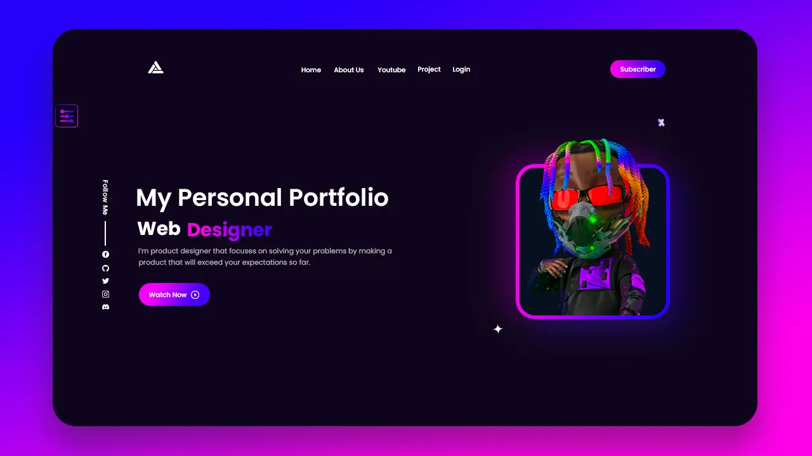
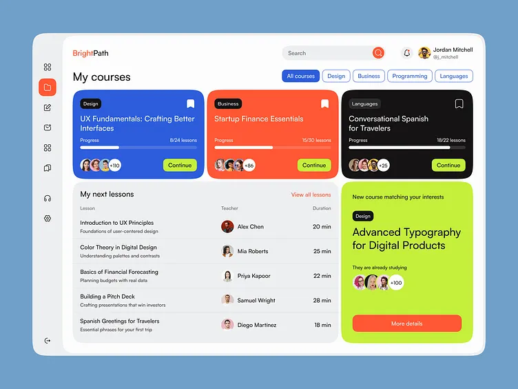
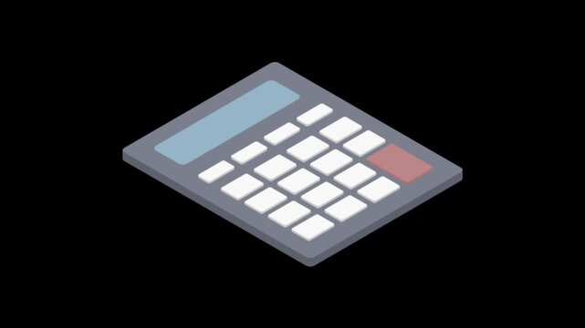

MyPortfolio
This is my personal portfolio site, built to showcase my skills,
projects, and background as I grow in web development. It's still
a work in progress, with plans to add more sections and polish the
design over time. Right now, it's just a basic prototype.

Student Dashboard
This project is a student dashboard designed to help organize and
track things like classes, tasks, or grades in one place. As a
beginner project, it's still in the early stages and only includes
basic features so far. It's a prototype meant to test out the core
layout and functionality.

Calculator WebPage
This is a simple web-based calculator that performs basic
arithmetic operations like addition, subtraction, multiplication,
and division. It's one of my first projects while learning web
development fundamentals. The current version is just a prototype,
with room to add more advanced features later.
Wala pa
This is a simple web-based calculator that performs basic
arithmetic operations like addition, subtraction, multiplication,
and division. It's one of my first projects while learning web
development fundamentals. The current version is just a prototype,
with room to add more advanced features later.
Wala pa
This is a simple web-based calculator that performs basic
arithmetic operations like addition, subtraction, multiplication,
and division. It's one of my first projects while learning web
development fundamentals. The current version is just a prototype,
with room to add more advanced features later.